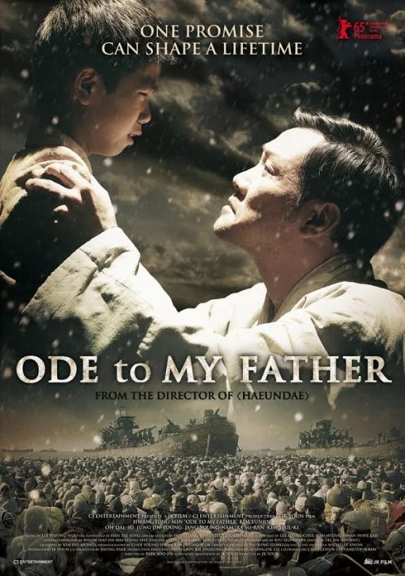
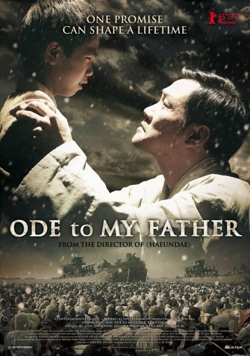
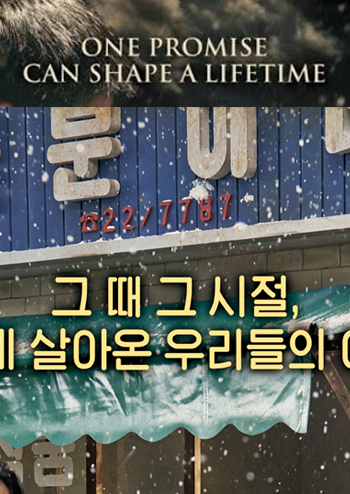
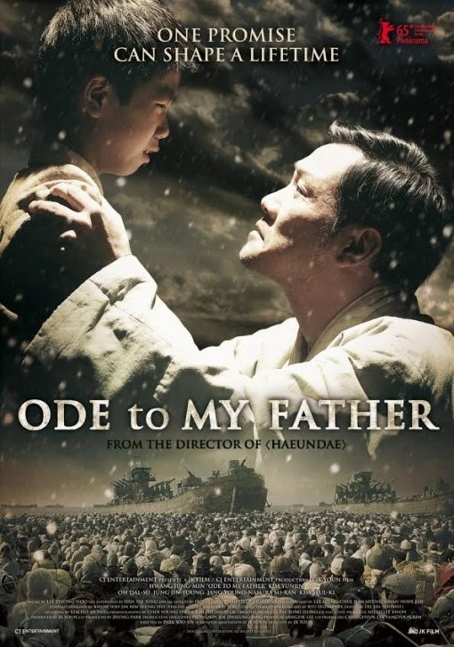

Ode To My Father
Yoon Je-kyoon
During the Hungnam Evacuation of 1950 in the Korean War, when thousands of refugees in what would become North Korea were transported south by U.S. Navy boats, a child, Deok-soo, loses track of his sister, Mak-soon. Because of this, Deok-soo's father stays behind to search for her, telling his son to take the boy's mother and two younger siblings to the port city of Busan, where Deok-soo's aunt runs an imported goods store. Before leaving Deok-soo and the rest of his family, the father makes his Deok-soo promise to be the head of the household in his place.
The Korean version